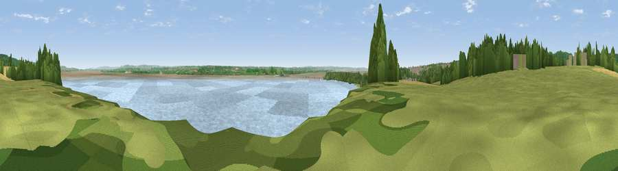

Viewpoint near Sedbury
#23889 in England · top 43% of its area beats it · near SedburyThe view, rendered

A 360° render of this exact spot computed from the terrain model, tree cover and land cover — summer colours, afternoon light, calibrated against photographs of famous viewpoints. Real trees, hedges and buildings will differ in detail.
The panorama
Grey silhouette: terrain skyline in each direction (720 bearings, Earth curvature and refraction included). Dashed green: skyline with trees (+15 m) and buildings (+8 m) as obstacles. Blue strip: how far the ground is visible on each bearing.
Where the view opens
Wedge length = distance to the farthest visible ground on that bearing (vegetation-aware). Rings at 10, 25 and 50 km.
What fills the view
84% water · 8% grassland · 5% woodland · 1% cropland · 1% built-up
Angular shares of the visible panorama (visual magnitude), not map area. Landscape diversity 0.26 (0–1 Shannon).
Key numbers
More beautiful places nearby
The staircase of upgrades: each row has a higher view potential than everything closer. Driving times are estimates from straight-line distance, calibrated against real road routing — check an actual route before setting out.
| Place | Direction | Drive | Score |
|---|---|---|---|
| Viewpoint near Woodcroft | NNW · 3 km | ~7 min | 59.1 |
| Viewpoint near Tidenham | N · 3 km | ~8 min | 64.6 |
| Viewpoint near Woolaston | NNE · 7 km | ~14 min | 66.1 |
| Viewpoint near Hewelsfield | NNE · 8 km | ~16 min | 69.6 |
| Viewpoint near Hewelsfield | NNE · 8 km | ~17 min | 70.7 |
| Viewpoint near Yorkley | NNE · 16 km | ~28 min | 70.9 |
| Viewpoint near Stinchcombe | ENE · 19 km | ~32 min | 80.5 |
| Garway Hill | NNW · 34 km | ~52 min | 84.6 |
51.63607, -2.64186 · source: screening · position refined by local search. Computed location — check access rights before visiting.